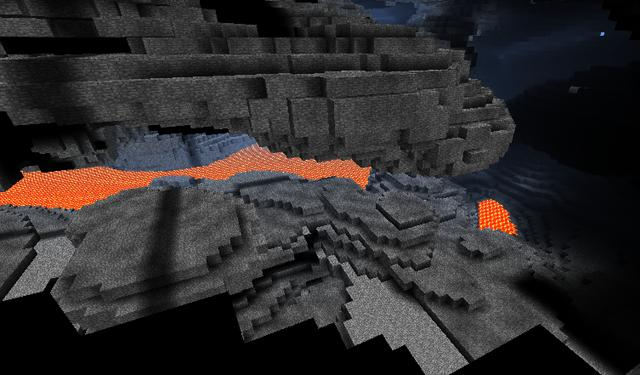

Please visit the source code repository on GitHub.
Download: zip ball, tar.gz ball.
Check out: git clone git://github.com/louisdx/schlagwetter (see below)
Schlagwetter is an open-source project to create a server for Minecraft. While there are several other similar projects, both free and commercial, I decided to start my own with specific design goals in mind.

April 2011: Basic networking framework is set up. The Minecraft protocol has been implemented as stubs, but not yet written out very much (digging works, placement doesn't). No persistent data storage yet, though region file reading is available.
-W -Wall -pedantic.
*) A possible exception will be memory mapping for the persistent storage. I do not know any platform-independent framework for that (but we will write one if we need to).
†) I would have said “without un-freed memory”, too, but GNU Readline does not seem to clean up and throws this off. Assistance welcome!
I follow the motto “reuse, don't reinvent” and try to use good libraries where possible rather than rolling my own solutions. Thankfully, many useful concepts are provided by the new C++ standard library (hash containers, threads, smart pointers), and networking primitives are entirely taken care of by Boost.Asio. A few more libraries are required and used with gratitude to their creators:
GitHub manages the repository, you can either download a compressed archive (see above), or use git directly:
git clone git://github.com/louisdx/schlagwetter.git
You will also need to obtain the cNBT submodule:
cd schlagwettergit submodule update --init
src/*.cpp files and link them together (excluding tester*.cpp); if you set all your
include paths right to pick up the requisite libraries, this ought to work.Let's suppose you are on a Linux machine and you have git and cmake.
Any suggestions for improving the build environment are most welcome!
I have not yet worked out the details; it will be something with “attribution” that is compatible with the other libraries and source code that I use. Any advice would be much appreciated.
Many thanks to the developers of mineserver for the inspiration for this project, lots of practical help and source code. If possible, I would like to keep the high-level constructs similar to theirs and make changes visible upstream. I am also grateful to the developers of craftd and Bravo for two very promising projects.
If you like to help out, just send me a message on GitHub, email me patches or suggestions, or send pull requests.
louisdx